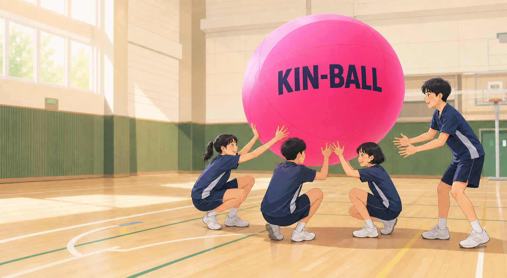
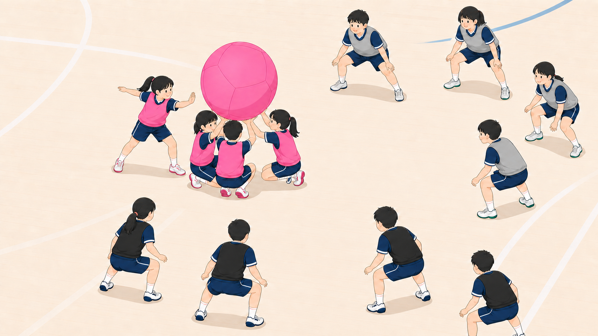
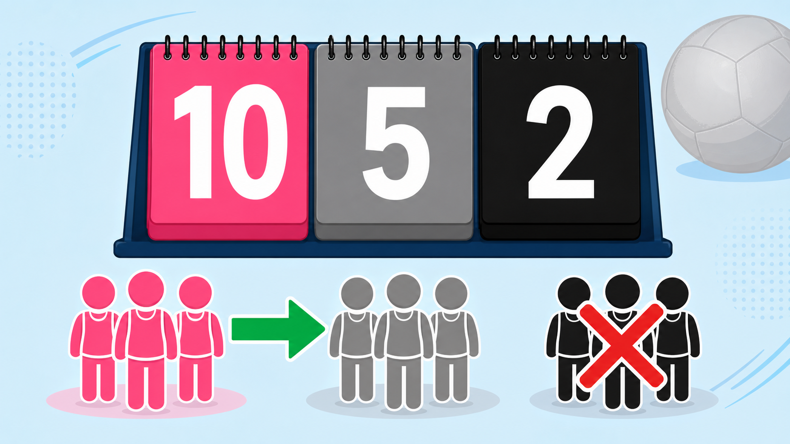
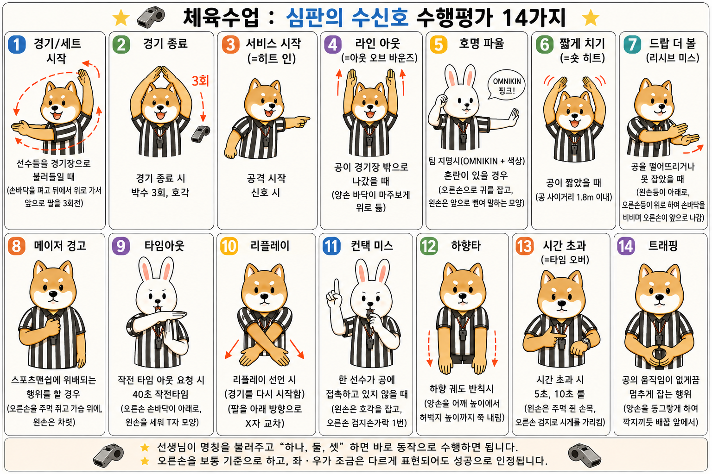

1986캐나다 퀘벡
체육 교사 Mario Demers(마리오 드메르)의 질문에서 시작되었습니다
“운동을 잘하는 소수만 돋보이는 것이 아니라, 모든 학생이 소외되지 않고 협력하며 즐길 수 있는 스포츠는 없을까?”
모든 참여자가 함께 즐기고 협력하며, 큰 점수 차이 때문에 중간에 포기하지 않는 스포츠를 만들고자 킨볼을 창안했습니다.

수업 준비부터 경기 기록까지 한 화면에서 빠르게 시작하세요.
경기 시작을 누르면 타이머와 경기 상태가 함께 시작됩니다.
아직 점수 변경 기록이 없습니다.
자동 계산되는 반별 리그
| 순위 | 조 | 경기 | 승 | 무 | 패 | 득점 | 실점 | 득실 | 승점 |
|---|
4경기 × 4사이클 자동 로테이션
각 반 대표팀이 출전하는
매 경기 3개 반 대표팀이 경기하고 1개 반이 학생 심판을 맡습니다. 모든 반의 출전·심판 횟수가 같습니다.
출전 3회 · 심판 1회 균등 배정
| 학급 | 대표 선수 | 1경기 | 2경기 | 3경기 | 4경기 | 5경기 | 6경기 | 7경기 | 8경기 | 승점 | 순위 |
|---|
8경기 결과 자동 집계
| 순위 | 학급 | 대표 선수 | 경기 | 승 | 무 | 패 | 득점 | 승점 |
|---|
3개 반 경기 · 학생 심판 1개 반
명단과 출석을 한 번에
| 출석 | 학생 | 소속 조 | 득점 | 수비 성공 | 심판 참여 | 기록 |
|---|
1986년 캐나다에서 시작된 킨볼.
탄생 배경부터 경기 방법과 기본 규칙까지 차근차근 알아봅니다.
01 · INTRODUCTION
“운동을 잘하는 소수만 돋보이는 것이 아니라, 모든 학생이 소외되지 않고 협력하며 즐길 수 있는 스포츠는 없을까?”
모든 참여자가 함께 즐기고 협력하며, 큰 점수 차이 때문에 중간에 포기하지 않는 스포츠를 만들고자 킨볼을 창안했습니다.
성인용 공은 지름 약 1.2m입니다. 초등학생용은 약 1m, 연습용은 약 0.8m를 사용합니다.
핑크·그레이·블랙 세 팀이 동시에 경기합니다. 팀당 4명, 총 12명이 코트에 섭니다.
정해진 골대나 공격 방향 없이 코트 전체를 활용하여 공격하고 수비합니다.
개인의 능력보다 팀원 모두의 소통·배려·협력이 경기의 핵심입니다.

GAME SETUP
WATCH & THINK
 YouTube에서 영상 보기
YouTube에서 영상 보기세 팀이 함께하는 경기 흐름부터 호명, 세팅, 히트, 리시브와 득점 규칙까지 실제 장면으로 확인하세요.
PLAY FLOW
한 팀 4명이 공 주위에 모여 공을 안정적으로 받칩니다.
“옴니킨!” 다음에 수비할 팀의 색상을 크고 정확하게 외칩니다.
4명이 모두 공에 닿은 상태에서 한 명이 수평 또는 위쪽으로 칩니다.
호명된 팀은 공이 바닥에 닿기 전에 협력해 받아 올립니다.
수비 실패나 파울이 나오면 실수하지 않은 두 팀이 1점씩 얻습니다.
자기 팀을 제외한 공격 대상에게 “옴니킨 + 색상!”을 먼저 외칩니다. Omnikin은 ‘모두 함께’라는 의미를 담고 있습니다.
히트 순간 공격 팀 선수 4명 모두 공에 접촉하고 있어야 합니다.
한쪽 무릎을 굽히고 양손을 머리 위로 뻗습니다. 손은 어깨너비로 벌리고 엄지는 바깥쪽을 향합니다.
공격 히트는 허리 위의 신체 부위로만 할 수 있습니다. 손이나 팔 등으로 공의 중심을 정확히 타격하며, 발이나 다리로 공을 차는 공격은 반칙입니다. 손목과 관절이 꺾이지 않도록 주의합니다.
2-3 · SCORING
가장 낮은 점수의 팀을 공격 대상으로 선택할 수 없습니다. 동점 상황 등 세부 운영은 적용 경기 규정에 따릅니다.
호명된 수비 팀은 득점하지 못합니다.

HOW TO SCORE
아래와 같은 수비 실패나 반칙이 발생하면, 실수한 팀을 제외한 나머지 두 팀이 각각 1점을 얻습니다.
호명된 수비 팀이 히트한 공을 받지 못해 바닥에 떨어뜨린 경우
선수가 터치한 공이 경기장 라인에 닿거나 라인 밖으로 나간 경우
히트하는 순간 공격 팀원 4명 중 한 명이라도 공에 접촉하지 않은 경우
히트한 공이 바닥에 닿기 전 수평으로 1.8m 이상 나아가지 못한 경우
히트한 공이 수평이나 위쪽이 아니라 대각선 아래 방향으로 떨어진 경우
세 번째 팀원이 공을 터치한 뒤에도 공을 가지고 발을 움직인 경우
서비스 휘슬 후 5초 또는 첫 수비 터치 후 10초 안에 히트하지 못한 경우
호명하면 안 되는 팀을 부르거나, 호명을 마치기 전에 히트한 경우
히트한 공이 호명된 팀이 아닌 다른 팀 선수에게 먼저 닿은 경우에는 어느 팀도 득점하지 않고 플레이를 다시 진행합니다.
2-4 · FOULS
분홍·검정·회색의 세 팀이 같은 코트에서 경기합니다. 한 팀은 보통 4명입니다.
히트 순간 공격 팀 네 명 모두 공에 닿아 있어야 합니다. 혼자서는 시작할 수 없습니다.
공은 약 1.8m 이상 날아가도록 수평 또는 위쪽으로 보냅니다. 아래로 내려치지 않습니다.
친구를 밀거나 진로를 막지 않고, 실수해도 탓하지 않습니다. 모두의 참여가 킨볼의 정신입니다.
03 · WHY KIN-BALL?
신체 능력이나 경험과 관계없이 누구나 자신의 역할로 참여합니다.
소통하고 역할을 나누는 과정에서 배려와 존중을 배웁니다.
360도 공간과 독특한 득점 규칙을 활용해 팀 전략을 세웁니다.
승패를 넘어 함께 즐기고 성장하는 경험을 만듭니다.
SAFETY PROMISE
친구와 부딪힐 위험이 있으면 공을 포기해도 됩니다. 공을 잡는 것보다 서로의 안전이 먼저입니다.
공 아래로 머리나 목부터 무리하게 뛰어들지 않습니다. 낮은 자세에서 팔과 몸으로 안전하게 받습니다.
손가락 끝으로 공을 밀거나 찌르지 않고, 손가락을 모아 넓은 손바닥과 팔 면으로 공을 다룹니다.
“내가 받을게!”, “뒤에 있어!”처럼 공을 쫓을 때 자신의 위치와 움직임을 팀원에게 알립니다.
정답이라고 생각하는 문장을 눌러 보세요.
수업 영상: 훈쌤커버리 「킨볼(Kinball). 영상 하나로 끝내기(경기방법 & 경기규칙)」
학생이 바로 이해하는
한 팀 4명씩 총 3팀, 12명이 경기합니다. 호명된 팀은 공이 바닥에 닿기 전에 살려야 하며, 공격이나 수비에 실패하면 나머지 두 팀이 각각 1점을 얻습니다.
세팅 후 공격 전에 옴니킨과 수비할 한 팀의 색상을 정확하게 외칩니다.
공을 치는 순간 팀원 4명 모두 공에 닿아 있어야 합니다.
손이나 팔로 공을 1.8m 이상, 수평 또는 위쪽 궤도로 보냅니다.
공이 바닥·라인·고정 장애물에 닿기 전에 받아 올립니다.
수비 실패나 파울이 나오면 나머지 두 팀이 각각 1점을 얻습니다.
선수나 공의 진로를 고의로 방해하는 신체 접촉은 금지입니다.
판정할 때 펼쳐보는
컨택미스 타격 순간 한 명이라도 공에서 떨어지거나, 같은 팀 선수에게 공이 닿아 좌우 진행 방향이 바뀌면 파울입니다.
트래핑 손바닥과 팔 전체로 공을 잡아 정지시키면 파울입니다.
10초: 첫 수비 선수가 공을 터치한 순간부터 세 번째 선수의 접촉, 세팅, 히팅까지 완료합니다.
5초: 세팅 후 서비스 호각이 울리면 5초 안에 히팅합니다.
서브·리시브 실패, 콜 미스 또는 파울이 발생하면 나머지 두 팀이 각각 1점을 얻습니다. 스마트 점수판의 파울 버튼도 같은 방식으로 계산합니다.
경기 결과보다 서로의 안전과 존중이 먼저입니다.
학생 심판을 위한
수행 방법 선생님이 명칭을 불러주고 “하나, 둘, 셋” 하면 바로 동작하세요. 오른손을 기준으로 하되 좌우가 조금 달라도 의미가 분명하면 됩니다.

시간을 더하고 토끼와 함께 신나게 달려요!
💡 시간이 끝나면 알림음과 함께 토끼가 결승선에 도착해요.
온라인과 기기에 이중 저장
교사 ID와 PIN으로 모든 명단·경기·개인 기록을 여러 기기에서 불러옵니다.
아직 연결되지 않았습니다.8개 반의 명단과 모든 경기 기록을 JSON 파일로 저장합니다.
이전에 저장한 파일을 불러와 수업 기록을 복원합니다.
현재 반의 순위표와 경기 결과를 교실 게시용으로 출력합니다.